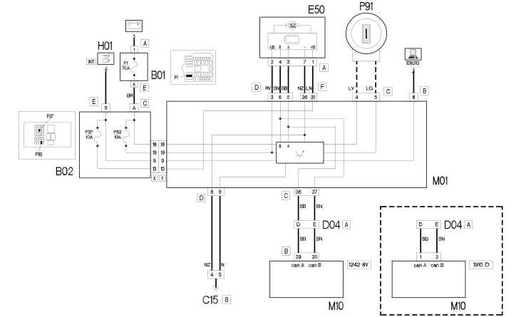

E7010 CODE - WIRING DIAGRAM
- Path
- Electrical equipment > 1 ELECTRICAL FUNCTIONS > E70 VEHICLE ELECTRONIC SYSTEMS > E7010 CODE > E7010 CODE - WIRING DIAGRAM
- Kind
- wiring diagram
- Applies to
- engines: 1.2 8v, 1.6 16v, 1.3 JTD 16V, 1.9 JTD 8V, 1.9 DIESEL; all production periods
- Interactive page
- https://sloeber94.github.io/elrnDB-fDbl/en/#/223003266
Applies to: engines: 1.2 8v, 1.6 16v, 1.3 JTD 16V, 1.9 JTD 8V, 1.9 DIESEL; all production periods
Wiring diagram

COMPONENTS
Component code | Name | Assembly reference |
|---|---|---|
Engine compartment junction unit | - | |
Engine compartment junction unit | ||
Engine compartment junction unit | ||
Junction unit under dashboard | ||
Facia earth, driver's side | - | |
Front/engine coupling | - | |
Front/engine coupling | ||
Instrument panel | - | |
Instrument panel | ||
Body computer | ||
Engine management ECU | ||
Aerial for Fiat-CODE |
Topics linked from this page (14)
- 1004B POWER UNIT ASSEMBLY
- 1056B MULTI-POINT INJECTION SYSTEM (MPI)
- 1060G pressure pump electric control
- 5505A multi-function components
- 5560B analogue control panel
- 5580E anti-theft device
- B001 JUNCTION UNIT
- B002 JUNCTION UNIT UNDER DASHBOARD
- C015 DASHBOARD EARTH, DRIVER'S SIDE
- D004 FRONT/ENGINE COUPLING
- E050 INSTRUMENT PANEL
- M001 BODY COMPUTER
- M010 ENGINE MANAGEMENT ECU
- P91 AERIAL FOR FIAT-CODE ( FRONT )